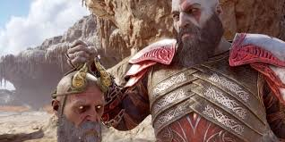
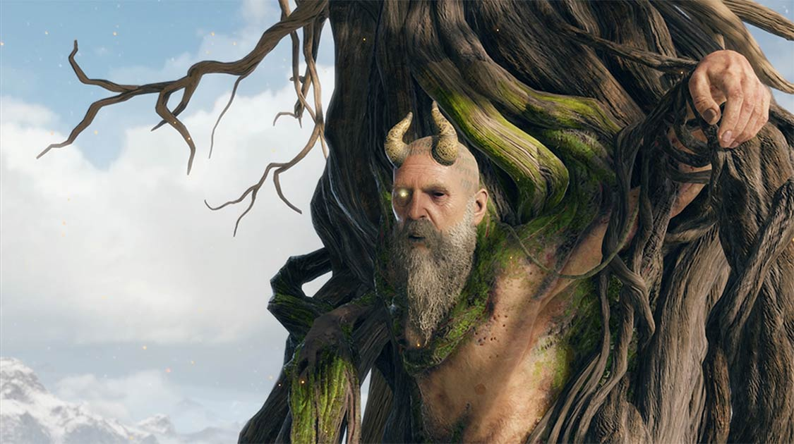

Origen y Sabiduría
Mimir, conocido como "El Hombre Más Listo Con Vida", es un ser de inmensa sabiduría que originalmente sirvió como consejero principal de Odín, el Padre de Todos. Nacido en los reinos nórdicos, Mimir posee conocimientos vastos sobre todos los Nueve Reinos, sus dioses, criaturas, historia y magia. Durante siglos, actuó como asesor de confianza de Odín, ganándose su apodo por su intelecto excepcional.
Sin embargo, con el tiempo Mimir comenzó a desaprobar los métodos crueles y manipuladores de Odín. Su desacuerdo culminó cuando intentó ayudar a los gigantes, lo que llevó a Odín a ordenar su ejecución. Como castigo por su "traición", Odín decapitó a Mimir y conservó su cabeza, usando magia para mantenerlo consciente pero sin capacidad de movimiento, obligándolo a continuar como su consejero contra su voluntad durante 109 años.
Alianza con Kratos y Atreus
Mimir conoce a Kratos y Atreus cuando estos buscan una manera de llegar a Jötunheim, el reino de los gigantes. Inicialmente cauteloso, Mimir pronto reconoce la nobleza en sus intenciones y decide ayudarlos, viendo en ellos una oportunidad para liberarse de la tiranía de Odín. Kratos libera a Mimir de su prisión en el árbol de Odín y, siguiendo las instrucciones de las Nornas, revive completamente la cabeza usando las aguas del lago de los nueve.
Desde entonces, Mimir se convierte en un compañero invaluable durante el viaje, colgado del cinturón de Kratos como una fuente constante de sabiduría, consejos e historias. Desarrolla una relación paternal con Atreus, a quien llama "hermano", y una amistad de respeto mutuo con Kratos, a quien apoda "hermano" también. Su conocimiento de los reinos y su ingenio rápido salvan a la pareja en numerosas ocasiones, convirtiéndose en un miembro esencial de su familia.

Mimir como compañero de viaje de Kratos
El sabio Mimir compartiendo su conocimiento ancestral